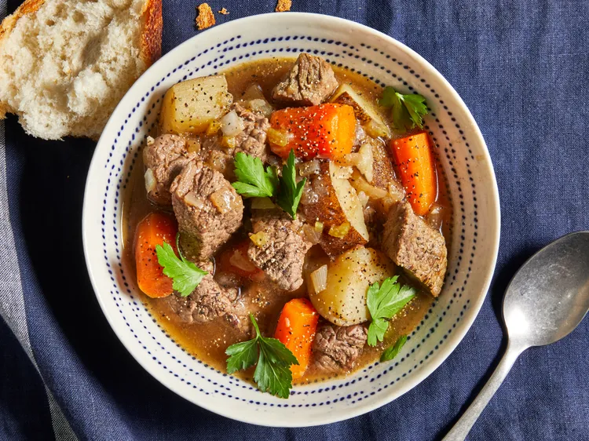

This easy slow cooker beef stew recipe made with potatoes, carrots, celery, broth, herbs, and spices is hearty and comforting. You won't be slow to say 'yum'!
Hearty potatoes, carrots, celery, and beef create an easy yet comforting meal. Home cooks love the thick texture for feeding families with plenty to go around. Allrecipes member Cindi M. says, "It was very flavorful and just the right consistency."